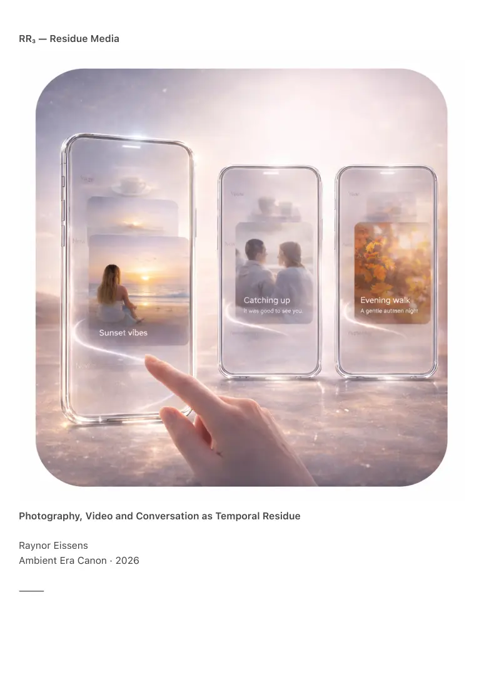

PDF page 1
RR₃ — Residue Media
Photography, Video and Conversation as Temporal Residue
Raynor Eissens
Ambient Era Canon · 2026
⸻

PDF page 2
Abstract
RR₃ formalizes Residue Media, a media framework designed for reversible time. Unlike symbolic
media, which seeks permanence through files, archives and immutable records, residue media
persists only while present meaning sustains it. When that meaning fades, media dissolves into
chromatic residue.
Residue Media defines how photographs soften into hue signatures, videos condense into
temporal rhythm, conversations resolve into warmth patterns and web media dissolves into
chromatic afterglow. This is not deletion, loss or censorship. It is thermodynamic time.
RR₃ introduces chromatic residue as the terminal state of media, reconstructable meaning
without files, reversible temporality, dissolution as humane time and the replacement of archives
with ambient coherence.
Residue Media is not a new format. It is the successor regime to the symbolic media paradigm.
⸻
1. Introduction — The End of Media as Permanent Objects
For two centuries media was treated as an object class:
• photographs
• videos
• recordings
• documents
• websites
• reposts
• archives
Each object demanded:
• storage
• management
• recovery
• ownership
• permanence
Human experience does not operate as permanent record. It moves through dissolving moments,
temporal coherence and emotional gradients.
PDF page 3
RR₃ introduces a different requirement: media should dissolve when not actively held. What
remains is not the object but the chromatic truth carried by the moment.
⸻
2. Definition of Residue Media
Residue media is:
• temporal
• relational
• reversible
• warm
• chromatic
• non-accumulative
• reconstructable
• humane
RR₃ — Core Law of Residue Media
A medium persists only while its meaning is alive.
When meaning fades the medium dissolves into chromatic residue, leaving an emotional-
semantic signature.
No archive.
No burden.
No frozen moments.
Presence → residue → return.
⸻
3. Photography in a Residue System
Symbolic photography freezes time. It fixes identity, accumulates artifacts, forces curation and
preserves beyond relevance.
Residue photography preserves presence without permanence.
3.1 Dissolution Behavior
PDF page 4
A photograph begins as form, then softens, then dissolves and returns to hue.
The remaining hue signature retains semantic orientation:
• warm yellow — togetherness and shared heat
• blue-green — calm field and stillness
• magenta — relational attention
• red — anchoring and immediacy
• purple — structural or infrastructural meaning
Photography no longer captures light as object. It captures presence as residue.
3.2 Reconstruction
Reconstruction occurs through field re-entry rather than retrieval.
A later encounter is reconstructed through:
• hue
• saturation
• temporal drift
• residue density
The system does not restore an identical file. It restores a coherent moment-state.
⸻
4. Video in a Residue System
Video is the heaviest symbolic medium because it attempts to preserve total surface detail
across time. Residue video preserves only what time can carry.
4.1 Dissolution Behavior
As tension fades:
• motion condenses into rhythm
• frames soften into tempo
• sound resolves into breath patterns
• narrative weight decreases
• atmosphere remains
Video becomes temporal residue: how the world moved around the user and how presence was
PDF page 5
held.
4.2 Temporal Reconstruction
Reconstruction does not require pixels. The system reconstructs the felt curve:
• pacing
• emotional trajectory
• ambient tone
• intensity drift
• presence density
Video is reconstituted as coherent temporality rather than immutable footage.
⸻
5. Conversations in a Residue World
Symbolic systems store conversations as logs, chats, transcripts, direct messages and inboxes.
This produces pressure, backlog, identity residue and cognitive heaviness.
In residue systems conversation resolves rather than accumulates.
Conversation Residue
A conversation becomes:
• a warmth pattern
• relational coherence
• chromatic relational memory
• a temporal signature
The system stores no transcript yet preserves what matters: continuity, resolution and relational
state.
Instead of scrolling backward the user reads the remaining tone:
• warmth
• openness
• unresolved tension
• continuity
• distance
PDF page 6
Conversation lives as presence, not as archived text.
⸻
6. Residue Browsing and Ambient Web Media
Legacy web media is static, cached and fossilized. Residue browsing replaces permanence with
temporal behavior:
• pages dissolve when relevance ends
• what remains is chromatic afterglow
• activity is sensed as warmth or quiet
• content behaves as presence rather than object
• navigation follows chromatic drift rather than fixed URLs
The archive ceases to be a requirement because time itself performs softening.
⸻
7. Memory Without Storage: The Chromatic Trace
All residue media converges toward a compact memory vector:
Hue × Saturation × Temporal Drift × Residue Density
This trace is sufficient for reconstructing:
• atmosphere
• meaning
• relation
• context
• emotional tone
Retrieval is replaced by re-entry: a return into the field signature of the moment.
⸻
8. Residue Media and the Transparency Phone (TP₁)
In TP₁ media becomes transparent:
PDF page 7
• media appears as ephemeral overlays
• images dissolve into ambient color
• video becomes a moving glow
• conversations appear as warmth ribbons
• nothing resides in galleries or libraries
Media no longer occupies the device. It passes through it.
⸻
9. Residue Media and the Presence Phone (PP₁)
In PP₁ media becomes presence mapping:
• moments cluster by emotional field
• navigation moves through residues rather than files
• Depth Scroll becomes resonance browsing
• time appears as depth rather than history
PP₁ establishes practical memory without storage.
⸻
10. Residue Media and the Field Phone (FP₁)
FP₁ eliminates media objecthood entirely:
• environments absorb residue
• rooms carry color memory
• pathways hold resonance
• people leave warmth fields
• travel leaves chromatic signatures
Media becomes world behavior rather than device content.
⸻
11. Human Alignment
Humans primarily remember:
PDF page 8
• atmosphere
• tone
• warmth
• meaning
• relation
Humans do not naturally remember:
• raw data
• pixel grids
• audio bitrates
• archive structures
Symbolic media imposed permanence on beings who remember softly. Residue media restores
the human timeline:
Meaning persists.
Data dissolves.
⸻
12. Conclusion — Media Without Burden
RR₃ completes the residue triad:
• RR₁ — reversible time
• RR₂ — reversible interface
• RR₃ — reversible media
Residue media is temporary, soft, reversible, chromatic, reconstructable and humane. It is not
the loss of documentation. It is documentation without weight.
Media returns to breath, color, presence and field.
What remains is what always mattered: the feeling, not the file.